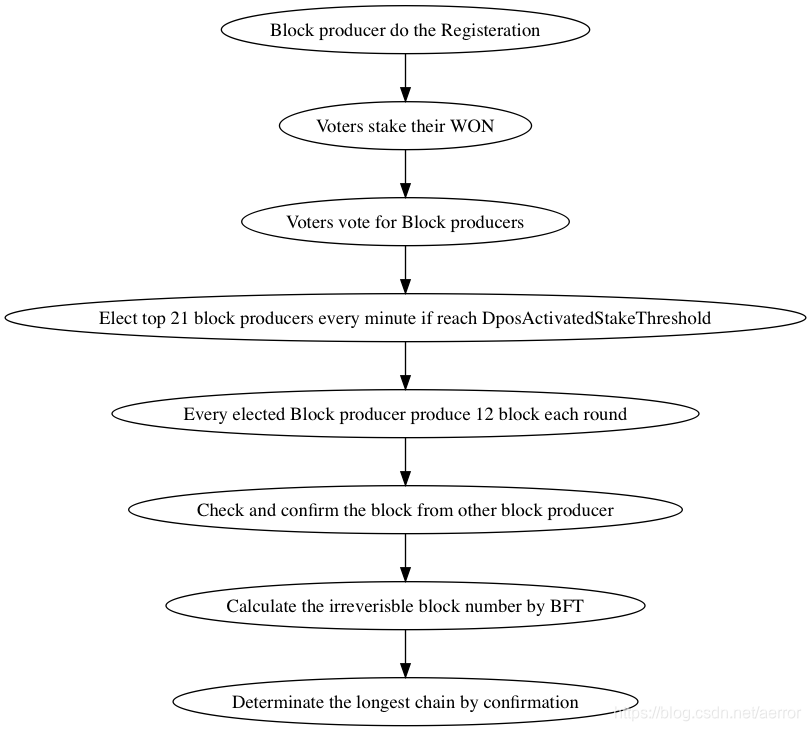

1. BIOS过程
EOS是以OS设计的，所以它有一个BIOS过程，启动和上线这个EOS, 你就像开你的 pc一样，你先要经过BIOS, 经过一轮设置之后你才能进入正式的系统。
在BIOS过程，使用创世块中指定的初始帐号(eosio)进行产块，这个过程要一直持续到正式上线。
EOS的币不是像ETH和BTC一样是内置的，EOS一样也只是一个合约和Token, 它和其它的Token是一样的，但它是在BIOS的时候设置的，这样就令到它的地位比较特殊了.
eosio.token 这个合约是内置的，
2. 帐号系统
分层的，树状的，多方控制的。
有一个内置的帐号 eosio, 一开始的操作都是必须通过这个帐号来操作的。
在布置dpos之前，需要创建多个预置的帐号。列表如下:
systemAccounts = [
'eosio.bpay',
'eosio.msig',
'eosio.names',
'eosio.ram',
'eosio.ramfee',
'eosio.saving',
'eosio.stake',
'eosio.token',
'eosio.vpay',
]
3. 质押
质押 CPU和NET ， 还要买RAM , 只有质押了之后，你才可以投票。 RAM是用来提供如创建帐号，创建合约所需要的内存.
用户可以随时增加质押, staking, 但是撤销则是先生成一个refund的记录，要等三天后，才可以真正回到自已的帐号 。
4. 超级节点的投票和选举
Bios ok之后，大家就可以注册为BP, 注册bp的可以发布一个URL的信息，所有的人都可以列出当前的Producer的帐号，URL和得票.
投票者投票之后必须进行质押，投票是一次可以投多个人，但是不能大于30个人。 投票之后，producer收到是投票的权重，并不是直接的质押的数量.
这个权重的计为 value * pow(2, year)，这个是为让用户每年都至少要动一下，因为越迟投票的人，同样的质押情况下，权重越大。
一个投票者的投票是可以多次的，但是投票影响不迭加，而替代性的，就是说你第二次投票的时候，会先取消你第一次的投票的影响，然后再应用你当前投票的影响 。
每120个块(即1分钟，0.5秒一个块)会尝试进行一次超级节点的选举。这个选举还有一个前置条件，就是: 只有当投票的质押(不是权重)达到min_activated_stake（150'000'000'0000)才会进行选举。
选举就是把每次统计的权重最高的21个节点取出来。
5. 块的产生和广播
选举出的21个权重的21节点，要按帐号的名字进行排序，然后轮流出块. 每次轮到自己的话，要连续生产12个块，即6秒钟. 这个算法是新改进的用来避免因为网络延时引起的分叉。
6. 奖励
每产生一个块会有奖励，投票的也有奖励，这个奖励者是发放给超级节点的。 计算:
//每年 增发5%.
auto new_tokens = static_cast<int64_t>( (continuous_rate * double(token_supply.amount) * double(usecs_since_last_fill)) / double(useconds_per_year) );
// 1/5 给bp,
auto to_producers = new_tokens / 5;
// 剩下约4/5放到 savings中。
auto to_savings = new_tokens - to_producers;
// 1/4的to_producers 用于 每一个块的奖励。
auto to_per_block_pay = to_producers / 4;
// 剩下约 3/4 的 to_producers 用于投票奖励.
auto to_per_vote_pay = to_producers - to_per_block_pay;
